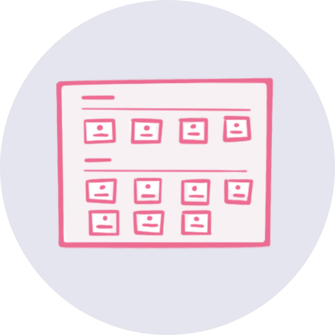
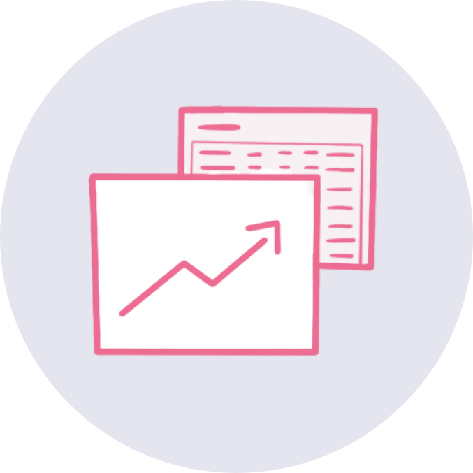

Adela is a mentor that works with students who need extra help in math class. She meets with them once a week, one-on-one or in small groups. Adela's students use an online program that they use to practice math problems and learn concepts, both in school and at home. Adela works with each student to set personal goals for the number of activities they'll complete and the progress they'll make. PL² connects with the online program to help Adela track her students' learning.
PL² Features

Dashboard
PL² allows mentors to view all their students and set individual goals based on their status.
Resources
PL² recommends resources to the mentors based on the status of their students.

Tracking Progress
Using PL², mentors can track how their students' ed-tech data changes over time.
Below is an instructional video of PL² (July 2019) covering the mentor dashboard, individual student pages, and resources. PL² is still in development and is continuously undergoing changes — please check back or reach out about future updates!
This next video covers the use of the PL² Resource Assistant. With the Resource Assistant, you can choose to answer one or more questions about your student, the answers of which are used to guide you to a resource that you can use to help the student. (Added March 2020)